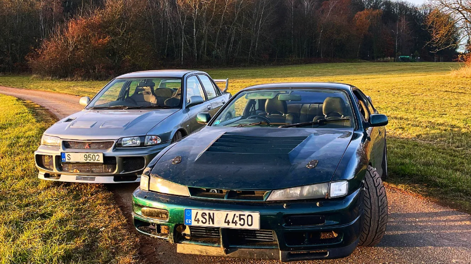
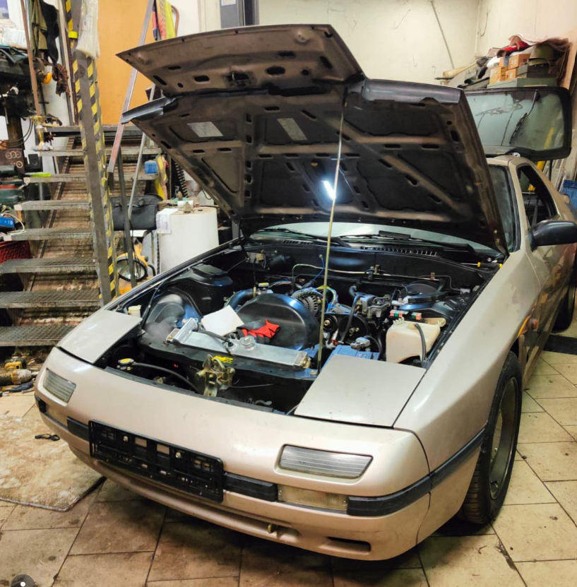

Stavíme čisté motorové svazky, dáváme do pořádku starou a nefunkční elektroinstalaci a připravujeme auta na bezpečné ladění programovatelných jednotek.
Proč zrovna my?
Většina klasických servisů vidí v autech jen mechaniku a spotřební díly. Když ale dojde na lámání chleba u platforem s motory jako 4G63, SR20DET nebo 13B Wankel, mechanické zkušenosti končí. Nastupuje nutnost absolutní integrity v elektrických vlnách.
Nekonáme běžný servis pro obyčejná auta. Přebíráme projekty ve fázi „punku“ a přinášíme do nich chirurgickou přesnost. Čisté dráty, perfektní kostry, správné stínění senzorů a logické mapování dat.
[ Kliknutím na kartu přejdeš přímo na detaily na Instagramu ]

Kompletní rekonstrukce svazků a testování standalone managementu na těchto ikonických JDM platformách.

Chirurgická práce na elektrickém řádu, stínění kabeláže a pokročilé kalibraci senzorů pro rotační motor 13B.
Nahlédnout do celkového archivu prací a odsekávání sémantického chaosu ze starších japonských speciálů.
Kompletní stavba nových motorových i interiérových kabelových svazků. Dokážeme kompletně vyřezat staré, amatérské zásahy, zaizolovat zoxidované spoje a zbavit auto zbytečných drátů, které v něm nemají co dělat. Výsledkem je čistá a spolehlivá elektrika, kde každá věc má své pevné místo.
Montáž a základní oživení programovatelných řídicích jednotek (jako Ecumaster, Link a další). Pomůžeme ti přejít ze staré sériové jednotky na moderní elektroniku. Správně zapojíme a nastavíme všechny snímače, zkontrolujeme signály a auto kompletně připravíme tak, aby se dalo bezpečně naladit na brzdě.
Hledání skrytých elektrických chyb a analýza dat z řídicí jednotky. Pokud ti motor vynechává, blbne za tepla, nebo se chová divně, umíme se podívat do záznamů (logů) a najít, kde je zakopaný pes. Problémy řešíme na základě reálných čísel, ne metodou pokus-omyl.
Montáž a dopasování laminátových prvků, křídel a custom bodykitů. Víme, že staré japonské plasty málokdy sedí hned napoprvé. Dáme si práci s tím, aby všechno správně lícovalo, drželo na pevných úchytech a doplňovalo dravý vzhled tvého auta.
Pracujeme na bázi synergie, vzájemné důvěry a nekompromisního přístupu ke kvalitě. Pokud chceš své auto posunout z punkové fáze do absolutního stavu, ozvi se nám.
Webmastered by: Ladič spolujezdec © 2026